Print + Production
A collection of pieces I took beyond the screen: press-ready files, variable data, packaging, editorial work, printing and hands-on assembly.
These projects show different parts of print production, from building the design and setting up files correctly to checking the finished physical piece. The artwork is shown with its full edges and production marks wherever those details are part of the work.
Variable Data + Prepress
Duotone Variable Data Mailer
A two-sided direct-mail piece prepared for press with variable data. Names and mailing addresses were connected to a list, so each personalized version could update automatically instead of being changed one by one.
What I handled: design, data merge setup, recipient testing and press-ready output.
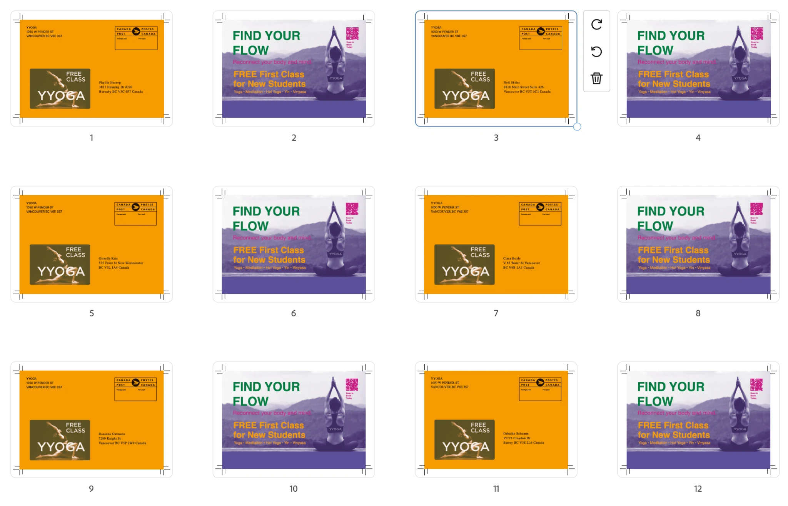
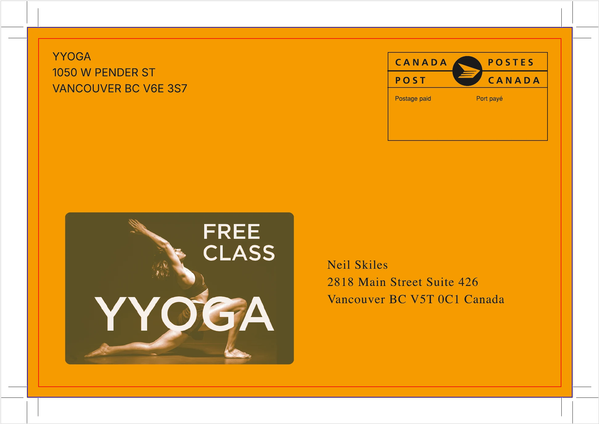
Packaging + Production
Flora Perfume Box
I designed the perfume packaging, built the artwork on the dieline, prepared the file for press, printed it and assembled the final box by hand. The production file includes the cut, fold and glue guides used to move from the flat layout to the finished package.
What I handled: packaging design, prepress, printing and assembly.
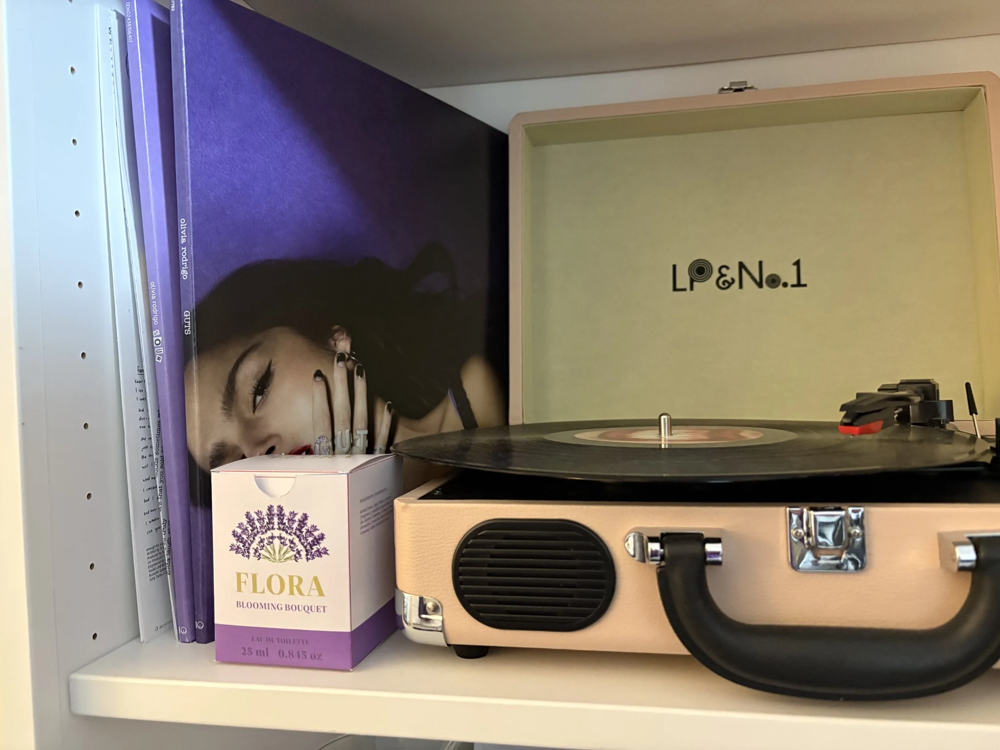
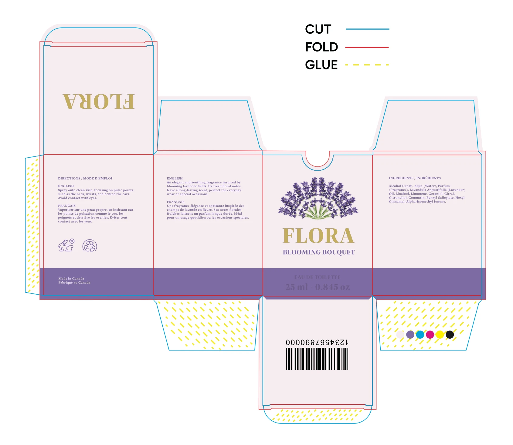
Identity + Prepress
Business Card — Press Ready
A two-sided business card prepared as final production artwork. I kept the identity simple and readable, then checked the trim, safe area and full-bleed setup before exporting the front and back for print.
What I handled: front and back design, production margins and press-ready export.
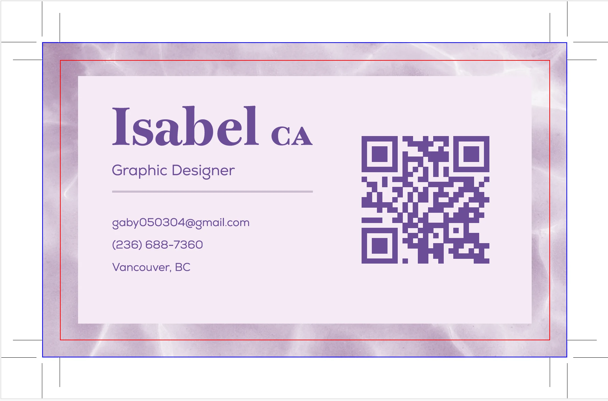
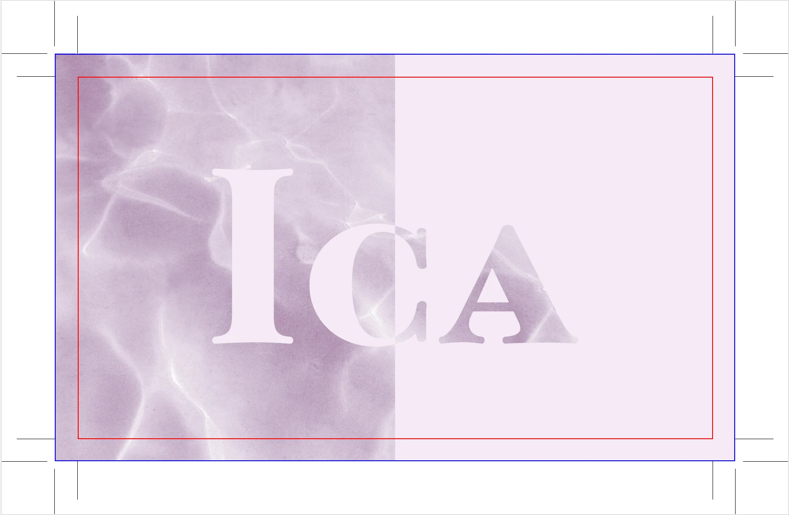
Editorial + Typography
Nexa Type Specimen
A type specimen designed around the Nexa family and produced as a physical booklet. The project uses scale, repetition and contrast to show the range of the typeface while still working as a complete printed piece.
What I handled: editorial layout, typography, print preparation and physical production.
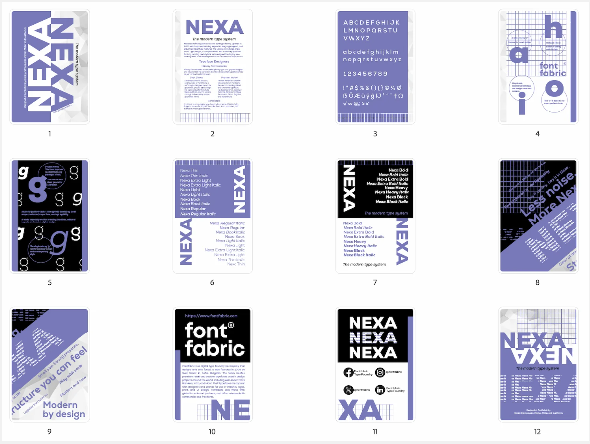
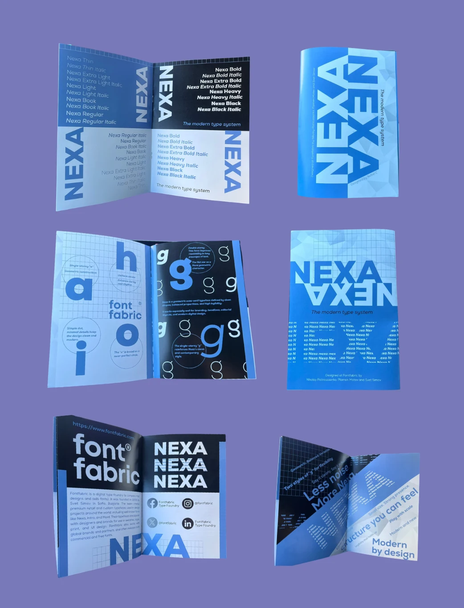
Booklet + Imposition
Portfolio Booklet — Press Preparation
My portfolio was arranged into printer spreads so the pages would land in the correct reading order after folding and binding. I also added the crop marks needed for the final print setup.
What I handled: page sequence, booklet imposition, crop marks and final press preparation.
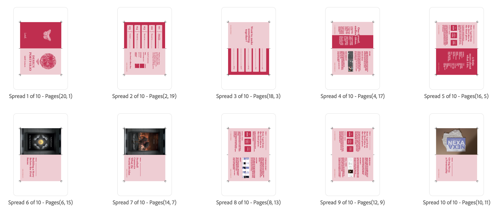
Concept + Print
From Within Book Jacket
A full book-jacket concept built around reflection and perspective. I designed the front, spine, back and flaps as one continuous piece, then printed it to check the scale, fold positions and how the artwork worked as a physical wrap.
What I handled: concept, illustration/layout, full jacket design and printing.
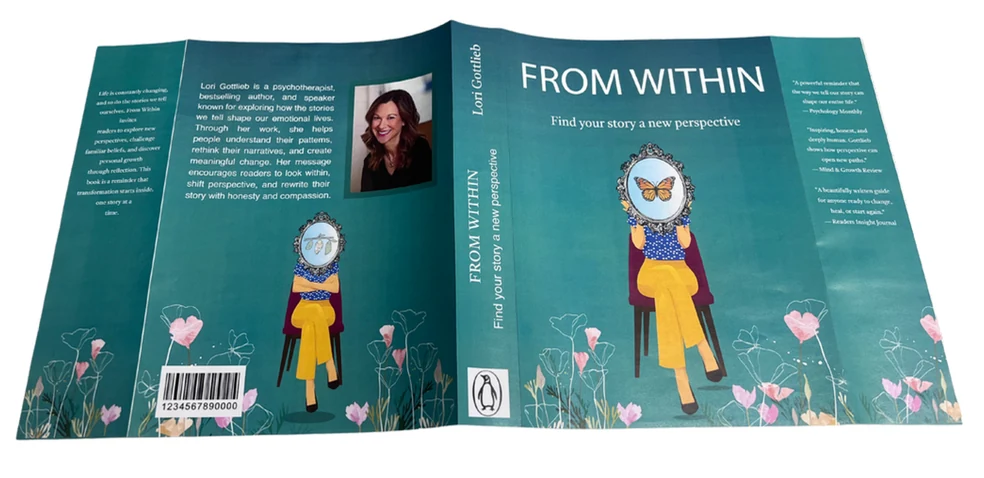
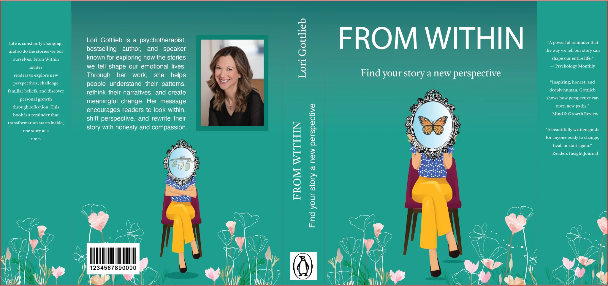
Packaging + Assembly
ERAS Soap Packaging
A set of three soap packages designed as one family for face, hand and body soap. I created the box artwork and dielines, printed the pieces, then cut, folded and assembled the final packages myself.
What I handled: packaging system, dielines, printing, cutting, folding and assembly.
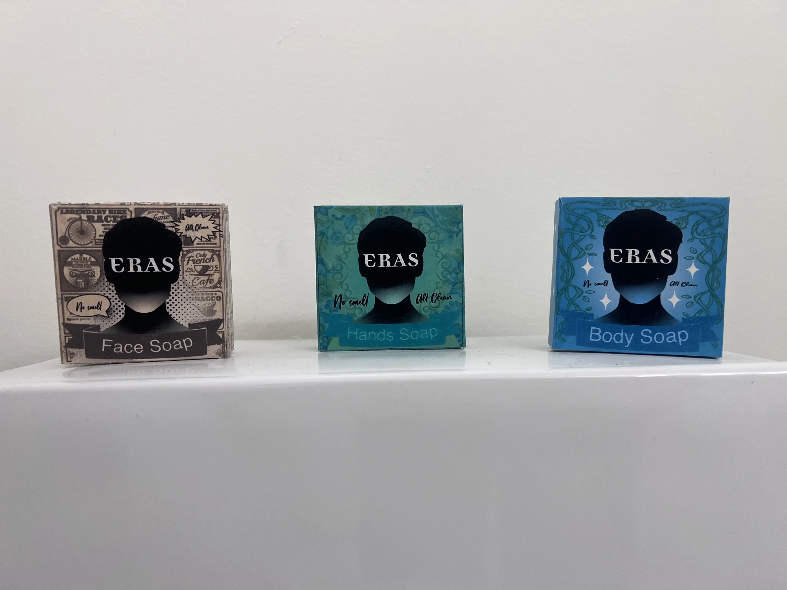
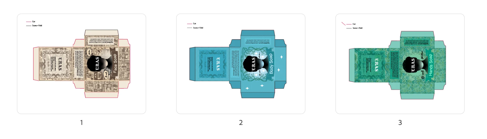